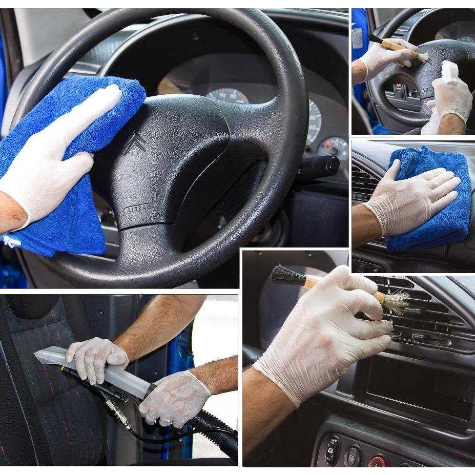

Reviví tu interior
¡Detene el paso del tiempo de tu auto! El detailing es un proceso sistemático y laborioso que repasa cada sección interior del vehiculo, desde el suelo hasta el techo. Nunca es tarde para renovar el interior de tu auto, limpiando y restaurando todos los tapizados y detalles que conforman el interior de nuestro auto.
